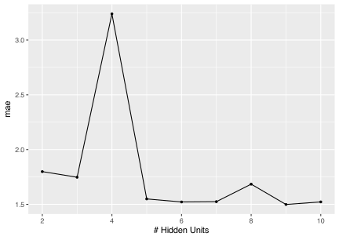
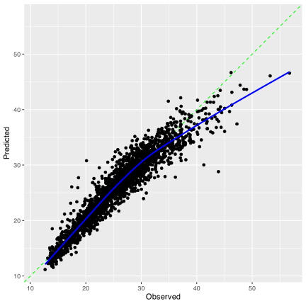
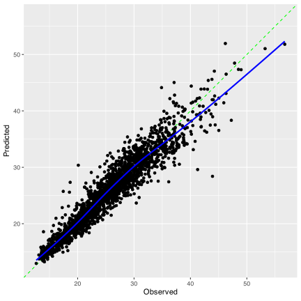

2 The Whole Game
This chapter on the main website is a high-level tour of the modeling process. We’ll follow the same pattern here by analyzing the same data. We won’t reproduce every figure or table but these notes will give you a broad understanding of how the tidymodels framework operates.
2.1 Requirements
You’ll need 6 packages (brulee, Cubist, patchwork, scales, splines2, and tidymodels) for this chapter. You can install them via:
Once you’ve installed brulee, you should load it using library(brulee) to install the underlying torch executables. You only have to do this once.
Two other packages are described but not directly used: parallel and doParallel.
Let’s run some code to get started:
library(tidymodels)
#> ── Attaching packages ─────────────────────────────────────────── tidymodels 1.2.0 ──
#> ✔ broom 1.0.5 ✔ recipes 1.0.10
#> ✔ dials 1.2.1 ✔ rsample 1.2.1
#> ✔ dplyr 1.1.4 ✔ tibble 3.2.1
#> ✔ ggplot2 3.5.0 ✔ tidyr 1.3.1
#> ✔ infer 1.0.7 ✔ tune 1.2.0
#> ✔ modeldata 1.3.0 ✔ workflows 1.1.4
#> ✔ parsnip 1.2.1 ✔ workflowsets 1.1.0
#> ✔ purrr 1.0.2 ✔ yardstick 1.3.1
#> ── Conflicts ────────────────────────────────────────────── tidymodels_conflicts() ──
#> ✖ purrr::discard() masks scales::discard()
#> ✖ dplyr::filter() masks stats::filter()
#> ✖ dplyr::lag() masks stats::lag()
#> ✖ recipes::step() masks stats::step()
#> • Dig deeper into tidy modeling with R at https://www.tmwr.org
library(probably)
#>
#> Attaching package: 'probably'
#> The following objects are masked from 'package:base':
#>
#> as.factor, as.ordered
library(patchwork)
tidymodels_prefer()Finally, this note:
All of these notes will assume that you have an R session that is running from the root of the directory containing the GitHub repository files. In other words, if you were to execute list.dirs(recursive = FALSE), the output would show entries such as "./chapters", "./RData", etc.
If you are not in the right place, use setwd() to change the working directory to the correct location.
If you start by opening the Rproj file, you will always start in the right place.
2.2 The Data
The data set is pre-compiled into a binary format R uses (called “RData format” here). It is in the RData directory. A csv version is also in the delimited directory. Let’s load it:
load("RData/deliveries.RData")There are a lot of ways that you can examine the contents of an object. View() is good for data frames; in the RStudio IDE, it opens a spreadsheet-like viewer. tibble::glimpse() shows more details about the object, such as classes, but can be a bad choice if you have >50 columns in the data (or if it is a long list or similar). We’ll use that:
glimpse(deliveries)
#> Rows: 10,012
#> Columns: 31
#> $ time_to_delivery <dbl> 16.11, 22.95, 30.29, 33.43, 27.23, 19.65, 22.10, 26.63, 3…
#> $ hour <dbl> 11.90, 19.23, 18.37, 15.84, 19.62, 12.95, 15.48, 17.05, 1…
#> $ day <fct> Thu, Tue, Fri, Thu, Fri, Sat, Sun, Thu, Fri, Sun, Tue, Fr…
#> $ distance <dbl> 3.15, 3.69, 2.06, 5.97, 2.52, 3.35, 2.46, 2.21, 2.62, 2.7…
#> $ item_01 <int> 0, 0, 0, 0, 0, 1, 0, 0, 0, 0, 0, 0, 0, 1, 0, 0, 0, 0, 0, …
#> $ item_02 <int> 0, 0, 0, 0, 0, 0, 0, 0, 0, 2, 0, 0, 0, 1, 0, 0, 0, 1, 0, …
#> $ item_03 <int> 2, 0, 0, 0, 0, 0, 1, 1, 0, 1, 0, 0, 0, 0, 1, 0, 0, 0, 0, …
#> $ item_04 <int> 0, 0, 0, 0, 1, 1, 1, 0, 0, 0, 1, 0, 1, 0, 0, 0, 0, 0, 0, …
#> $ item_05 <int> 0, 0, 1, 0, 0, 0, 0, 0, 0, 0, 0, 0, 0, 0, 0, 0, 0, 0, 0, …
#> $ item_06 <int> 0, 0, 0, 0, 0, 0, 0, 1, 0, 0, 0, 0, 0, 0, 0, 1, 0, 0, 1, …
#> $ item_07 <int> 0, 0, 0, 0, 1, 1, 0, 0, 1, 0, 0, 0, 0, 0, 0, 1, 0, 0, 1, …
#> $ item_08 <int> 0, 0, 0, 0, 0, 0, 0, 1, 0, 0, 1, 0, 1, 0, 0, 0, 1, 0, 0, …
#> $ item_09 <int> 0, 0, 0, 0, 0, 1, 0, 0, 0, 0, 0, 0, 1, 0, 1, 0, 0, 0, 0, …
#> $ item_10 <int> 1, 0, 0, 0, 0, 0, 0, 0, 0, 0, 0, 1, 0, 0, 0, 0, 0, 0, 0, …
#> $ item_11 <int> 1, 0, 0, 0, 1, 1, 0, 0, 0, 0, 0, 0, 0, 0, 0, 0, 0, 0, 0, …
#> $ item_12 <int> 0, 0, 0, 1, 0, 0, 0, 0, 0, 1, 0, 0, 0, 0, 0, 0, 0, 0, 0, …
#> $ item_13 <int> 0, 0, 0, 0, 0, 0, 0, 0, 0, 0, 0, 0, 0, 0, 0, 0, 0, 0, 0, …
#> $ item_14 <int> 0, 0, 0, 0, 1, 0, 0, 0, 0, 0, 0, 0, 0, 0, 0, 0, 0, 0, 0, …
#> $ item_15 <int> 0, 0, 0, 0, 0, 0, 0, 0, 1, 0, 0, 0, 0, 0, 0, 0, 0, 0, 0, …
#> $ item_16 <int> 0, 0, 0, 0, 0, 0, 0, 0, 0, 0, 0, 0, 0, 0, 0, 0, 0, 0, 0, …
#> $ item_17 <int> 0, 0, 0, 0, 0, 0, 0, 0, 0, 1, 0, 0, 0, 0, 0, 0, 0, 0, 0, …
#> $ item_18 <int> 0, 1, 0, 0, 0, 0, 0, 0, 0, 1, 0, 0, 0, 0, 0, 1, 1, 0, 0, …
#> $ item_19 <int> 0, 0, 0, 0, 0, 0, 0, 0, 0, 0, 0, 0, 0, 0, 0, 0, 0, 0, 0, …
#> $ item_20 <int> 0, 0, 1, 0, 0, 0, 0, 0, 0, 0, 0, 0, 0, 0, 0, 0, 0, 0, 0, …
#> $ item_21 <int> 0, 0, 0, 0, 0, 0, 0, 1, 0, 0, 0, 0, 0, 0, 0, 0, 0, 0, 0, …
#> $ item_22 <int> 0, 0, 0, 0, 0, 1, 1, 0, 0, 1, 0, 0, 0, 1, 0, 0, 0, 0, 1, …
#> $ item_23 <int> 0, 0, 0, 0, 0, 0, 0, 0, 0, 0, 0, 0, 0, 0, 0, 0, 0, 0, 0, …
#> $ item_24 <int> 0, 0, 1, 0, 0, 1, 0, 0, 0, 0, 0, 0, 0, 0, 0, 0, 0, 0, 0, …
#> $ item_25 <int> 0, 0, 0, 0, 0, 0, 0, 0, 0, 0, 1, 0, 0, 0, 0, 0, 0, 1, 0, …
#> $ item_26 <int> 0, 0, 0, 0, 0, 0, 0, 0, 1, 0, 0, 1, 0, 0, 0, 0, 0, 0, 0, …
#> $ item_27 <int> 0, 0, 0, 1, 1, 0, 0, 0, 0, 0, 0, 1, 1, 0, 0, 0, 0, 0, 0, …We can see that this is a data frame and, more specifically a specialized version called a tibble. There are 10,012 data points and 31 columns and their types.
Note that the day column is a factor. This is the preferred way to represent most categorical data (for modeling, at least). A factor catalogs the possible values of the data and stores those levels. That is important when we convert categorical predictors to “dummy variables” or “indicators” and similar operations.
In some cases, storing categorical data as integers might seem like a good idea (especially 0/1 for binary data). Do your best to avoid that. R (and tidymodels) would instead you use a data type that is designed explicitly for categories (a factor); it knows what to do with factors. If an integer is used, R can’t distinguish this from a column of counts (such as the number of times that item_01 was included in the order).
To create the histograms of the delivery times, we used this code to create each:
# Setup some fancy code for the axes:
log_2_breaks <- scales::trans_breaks("log2", function(x) 2^x)
log_2_labs <- scales::trans_format("log2", scales::math_format(2^.x))
delivery_hist <-
deliveries %>%
ggplot(aes(x = time_to_delivery)) +
geom_histogram(bins = 30, col = "white") +
geom_rug(alpha = 1 / 4) +
labs(x = "Time Until Delivery (min)", title = "(a)")
delivery_log_hist <-
deliveries %>%
ggplot(aes(x = time_to_delivery)) +
geom_histogram(bins = 30, col = "white") +
geom_rug(alpha = 1 / 4) +
labs(x = "Time Until Delivery (min)", title = "(b)") +
scale_x_log10(breaks = log_2_breaks, labels = log_2_labs)You don’t need to assign the plots to objects; you can just print each. We did this so that we can concatenate the two plots with the patchwork package1:
delivery_hist + delivery_log_hist
In the code above, we use an option called "alpha". This is jargon for transparency; a value of 1/4 means that the points in the rug are 25% opaque.
2.3 Data Spending
tidymodels has a variety of ways to split the data at the outset of your modeling project. We will create a three-way split of the data using a function called initial_validation_split().
It uses random numbers so we will set the random number seed before using it.
We are using random numbers (actually pseudo-random numbers). We want to get the same “random” values every time we run the same code for reproducibility. To do that, we use the set.seed() function and give it an integer value. The value itself doesn’t matter.
The random number stream is like a river. If you want to see the same things in your journey down the river, you must get in at the same exact spot. The seed is like the location where you start a journey (that is always the same).
The code is below.
The
propargument shows the fraction of the original data that should go into the training set (60%) and the validation set (20%). The remaining 20% are put in the test set.The
strataargument specifies that the splitting should consider the outcome column (time_to_delivery). This will be discussed in a future section. In short, the three-way splitting is done in different regions of the outcome data in a way that makes the distribution of the outcome as similar as possible across the three partitions.
We used a value of 991 to set the seed2:
This object records which rows of the original data go into the training, validation, or test sets. The printed output shows the totals for each as <train/val/test/total>.
To get the data frames with the correct rows, use these three eponymous functions:
delivery_train <- training(delivery_split)
delivery_test <- testing(delivery_split)
delivery_val <- validation(delivery_split)We will mostly work with the training set of 6,004 deliveries. We’ll use that to explore the data, fit models, and so on.
2.4 Exploratory Data Analysis
We mostly used ggplot2 and patchwork to create these graphics:
# Make specific colors for each day
day_cols <- c("#000000FF", "#24FF24FF", "#009292FF", "#B66DFFFF",
"#6DB6FFFF", "#920000FF", "#FFB6DBFF")
delivery_dist <-
delivery_train %>%
ggplot(aes(x = distance, time_to_delivery)) +
geom_point(alpha = 1 / 10, cex = 1) +
labs(y = "Time Until Delivery (min)", x = "Distance (miles)", title = "(a)") +
# This function creates the smooth trend line. The `se` option shuts off the
# confidence band around the line; too much information to put into one plot.
geom_smooth(se = FALSE, col = "red")
delivery_day <-
delivery_train %>%
ggplot(aes(x = day, time_to_delivery, col = day)) +
geom_boxplot(show.legend = FALSE) +
labs(y = "Time Until Delivery (min)", x = NULL, title = "(c)") +
scale_color_manual(values = day_cols)
delivery_time <-
delivery_train %>%
ggplot(aes(x = hour, time_to_delivery)) +
labs(y = "Time Until Delivery (min)", x = "Order Time (decimal hours)", title = "(b)") +
geom_point(alpha = 1 / 10, cex = 1) +
geom_smooth(se = FALSE, col = "red")
delivery_time_day <-
delivery_train %>%
ggplot(aes(x = hour, time_to_delivery, col = day)) +
labs(y = "Time Until Delivery (min)", x = "Order Time (decimal hours)", title = "(d)") +
# With `col = day`, the trends will be estimated separately for each value of 'day'.
geom_smooth(se = FALSE) +
scale_color_manual(values = day_cols)patchwork puts it together.
# Row 1
( delivery_dist + delivery_time ) /
# Row 2
( delivery_day + delivery_time_day ) +
# Consolidate the legends
plot_layout(guides = 'collect') &
# Place the legend at the bottom
theme(legend.title = element_blank(), legend.position = "bottom")
#> `geom_smooth()` using method = 'gam' and formula = 'y ~ s(x, bs = "cs")'
#> `geom_smooth()` using method = 'gam' and formula = 'y ~ s(x, bs = "cs")'
#> `geom_smooth()` using method = 'gam' and formula = 'y ~ s(x, bs = "cs")'
ggplot2 is a bit noisy. The messages tell you details about how it made the smooth trend line. The code s(x, bs = "cs") defines a spline smoother that we will see more of shortly (using a different function).
The methods that we used to compute the effects of the item_* columns are more complicated. We must make probabilistic assumptions about the data if we want to get something like a confidence interval. Alternatively, we could specify the empirical distribution function via the bootstrap resampling method. This helps us estimate the standard error of some statistic and use that to compute an interval.
First, we make a function that takes some data and computes our statistics of interest. It assumes x is the entire data set with the delivery time column and each item column.
time_ratios <- function(x) {
x %>%
# The items are in columns; we'll stack these columns on one another.
pivot_longer(
cols = c(starts_with("item")),
names_to = "predictor",
values_to = "count"
) %>%
# Collapse the counts into a "in order"/"not in order" variable.
mutate(ordered = ifelse(count > 0, "yes", "no")) %>%
# Compute, for each value of the 'predictor' and 'ordered' columns,
# the mean delivery time.
summarize(mean = mean(time_to_delivery),
.by = c(predictor, ordered)) %>%
# Move the means to columns for when they were in the order
# and when they were not. The new column names are `yes` and `no`.
pivot_wider(id_cols = predictor,
names_from = ordered,
values_from = mean) %>%
# Compute the ratio. This is a fold-difference in delivery times.
mutate(ratio = yes / no) %>%
select(term = predictor, estimate = ratio)
}When run in the training set:
time_ratios(delivery_train)
#> # A tibble: 27 × 2
#> term estimate
#> <chr> <dbl>
#> 1 item_01 1.074
#> 2 item_02 1.010
#> 3 item_03 1.010
#> 4 item_04 1.002
#> 5 item_05 1.005
#> 6 item_06 1.018
#> # ℹ 21 more rowsA value of 1.07 means that there is a 7% increase in the delivery time when that item is in the order at least once.
A tidymodels function called int_pctl() can take a collection of bootstrap samples of a data set, compute their statistics, and use the results to produce confidence intervals (we’ll use 90% intervals). To use it, we’ll resample the training set using the bootstraps() function and then use a mutate() to compute the fold differences.
We are using random numbers again, so let’s reset the seed3.
set.seed(624)
resampled_data <-
delivery_train %>%
select(time_to_delivery, starts_with("item")) %>%
# This takes a while to compute. The materials use 5000 bootstraps
# but a smaller number is used here for demonstration.
bootstraps(times = 1001)
resampled_data
#> # Bootstrap sampling
#> # A tibble: 1,001 × 2
#> splits id
#> <list> <chr>
#> 1 <split [6004/2227]> Bootstrap0001
#> 2 <split [6004/2197]> Bootstrap0002
#> 3 <split [6004/2156]> Bootstrap0003
#> 4 <split [6004/2210]> Bootstrap0004
#> 5 <split [6004/2208]> Bootstrap0005
#> 6 <split [6004/2227]> Bootstrap0006
#> # ℹ 995 more rowsThe splits column contains the information on each bootstrap sample. To get a specific bootstrap sample, we can use the analysis(split_object) function on each element of the splits column. purrr::map() takes each split, extracts the bootstrap sample, then computes all of the ratios4.
resampled_ratios <-
resampled_data %>%
mutate(stats = map(splits, ~ time_ratios(analysis(.x))))
resampled_ratios
#> # Bootstrap sampling
#> # A tibble: 1,001 × 3
#> splits id stats
#> <list> <chr> <list>
#> 1 <split [6004/2227]> Bootstrap0001 <tibble [27 × 2]>
#> 2 <split [6004/2197]> Bootstrap0002 <tibble [27 × 2]>
#> 3 <split [6004/2156]> Bootstrap0003 <tibble [27 × 2]>
#> 4 <split [6004/2210]> Bootstrap0004 <tibble [27 × 2]>
#> 5 <split [6004/2208]> Bootstrap0005 <tibble [27 × 2]>
#> 6 <split [6004/2227]> Bootstrap0006 <tibble [27 × 2]>
#> # ℹ 995 more rows
# An example:
resampled_ratios$stats[[1]]
#> # A tibble: 27 × 2
#> term estimate
#> <chr> <dbl>
#> 1 item_01 1.070
#> 2 item_02 1.018
#> 3 item_03 1.008
#> 4 item_04 1.008
#> 5 item_05 1.017
#> 6 item_06 1.007
#> # ℹ 21 more rowsrsample::int_pctl() can consume these results and produce an interval for each item column5.
resampled_intervals <-
resampled_ratios %>%
int_pctl(stats, alpha = 0.1)
resampled_intervals
#> # A tibble: 27 × 6
#> term .lower .estimate .upper .alpha .method
#> <chr> <dbl> <dbl> <dbl> <dbl> <chr>
#> 1 item_01 1.052 1.075 1.097 0.1 percentile
#> 2 item_02 0.9950 1.009 1.024 0.1 percentile
#> 3 item_03 0.9940 1.009 1.024 0.1 percentile
#> 4 item_04 0.9879 1.002 1.016 0.1 percentile
#> 5 item_05 0.9884 1.005 1.021 0.1 percentile
#> 6 item_06 1.002 1.018 1.033 0.1 percentile
#> # ℹ 21 more rowsHere’s our plot:
resampled_intervals %>%
# Convert the folds to percentages and make the item values
# a little cleaner:
mutate(
term = gsub("_0", " ", term),
term = factor(gsub("_", " ", term)),
term = reorder(term, .estimate),
increase = .estimate - 1,
) %>%
ggplot(aes(increase, term)) +
geom_vline(xintercept = 0, col = "red", alpha = 1 / 3) +
geom_point() +
geom_errorbar(aes(xmin = .lower - 1, xmax = .upper - 1), width = 1 / 2) +
scale_x_continuous(labels = scales::percent) +
labs(y = NULL, x = "Increase in Delivery Time When Ordered") +
theme(axis.text.y = element_text(hjust = 0))2.5 Model Development
The analyses in this section define a model pipeline, fit it to the training set, and then measure performance using the validation set. We’ll review the three evaluated models and describe how those computations were done.
Before we get started, we need to specify how to measure model effectiveness. The materials use the mean absolute error (MAE). To specify this performance metric, you can use the yardstick::metric_set() function and give it the function names for specific metrics (like the yardstick::mae() function):
reg_metrics <- metric_set(mae)We’ll show you how to use reg_metrics in a bit.
Linear Regression
The linear regression model is fairly simple to define and fit. Before we get to that, we must introduce a major tidymodels component: the recipe.
A recipe is a set of instructions defining a potential series of computations on the predictor variables to put them into a format the model (or data set) requires. For example, the day-of-the-week factor must be converted into a numeric format. We’ll use the standard “Dummy variable” approach to do that. Additionally, our exploratory data analysis discovered that:
- There is a nonlinear relationship between the outcome and the time of the order.
- This nonlinear relationship is different for different days. This is an interaction effect between a qualitative predictor (
day) and a nonlinear function of another (hour). - There also appeared to be an additional nonlinear effect for the order distance.
We can initialize a recipe using a simple formula method:
spline_rec <- recipe(time_to_delivery ~ ., data = delivery_train)There are a few things that this function call does:
- The formula declares that the column
time_to_deliveryis the outcome (since it is on the left-hand side of the tilde). The dot on the right-hand side indicates that all of the columns indelivery_train, besides the outcome, should be treated as predictors. - The recipe collects information on each column’s type. For example, it understands that
dayis a factor and that theitem_*columns are numeric.
Let’s add to the recipe by converting day to indicator columns. We do this by adding a step to the recipe via:
spline_rec <-
recipe(time_to_delivery ~ ., data = delivery_train) %>%
step_dummy(all_factor_predictors()) The first argument to step functions is the variables that should be affected by the function. We can use any dplyr selector such as everything() and/or the bare column names. Here, we want to change every factor column that was the role of “predictor”. For this purpose, recipes have an extended set of selector functions.
Once the recipe is processed, this step will record which columns were captured by all_factor_predictors(), retain their factor levels, then convert them to a set of 0/1 indicators for each predictor/level.
Unlike base R’s formula method, the resulting columns are named rationally. By default, it uses the pattern {column name}_{level} for the new features. So, the column day will not exist after this step. It is replaced with columns such as day_Thursday and so on.
The next recipe step is probably unnecessary for this data set but automatically using it is not problematic. What happens if there is a factor level that occurs very infrequently? It is possible that this will only be observed in the validation or test set. step_dummy() will make a column for that factor level since it knows it exists but the training set will have all zeros for this column; it has zero variance. We can screen these out using step_zv() (‘zv’ = zero-variance):
spline_rec <-
recipe(time_to_delivery ~ ., data = delivery_train) %>%
step_dummy(all_factor_predictors()) %>%
step_zv(all_predictors()) Now, we can address the nonlinear effects. We’ll use a spline basis expansion (described later on the main page) that creates additional columns from some numeric predictor. We’ll use a natural spline function and create ten new columns for both hour and distance:
spline_rec <-
recipe(time_to_delivery ~ ., data = delivery_train) %>%
step_dummy(all_factor_predictors()) %>%
step_zv(all_predictors()) %>%
step_spline_natural(hour, distance, deg_free = 10)The naming convention for these new features are hour_01 … hour_10 and so on. The original hour column is removed (same for the distance column).
This step allows the linear regression to have nonlinear relationships between predictors and the outcome.
Finally, we can create interactions. In base R, an interaction between variables a and b is specified in the formula using a:b. We’ll use the same method here with step_interact(). The main difference is that the columns day and hour no longer exist at this point. To capture all of the interactions, we can use the : convention with selector functions. Using starts_wth("day_") will capture the existing indicator columns and, similarly, starts_wth("hour_") finds the appropriate spline terms. Our final recipe is then:
spline_rec <-
recipe(time_to_delivery ~ ., data = delivery_train) %>%
step_dummy(all_factor_predictors()) %>%
step_zv(all_predictors()) %>%
step_spline_natural(hour, distance, deg_free = 10) %>%
step_interact(~ starts_with("hour_"):starts_with("day_"))You can learn more about recipes later and there is material in the tidymodels book as well as tidymodels.org.
To specify the linear regression model, we use one of the functions from the parsnip package called… linear_reg(). Since we are using ordinary least squares, this function defaults to stats::lm().
# This creates a model specification:
lm_spec <- linear_reg()
lm_spec
#> Linear Regression Model Specification (regression)
#>
#> Computational engine: lmThe engine mentioned here is the computational method to fit the model. R has many ways to do this and "lm" is the default engine.
How do we combine the recipe and the model specifications? The best approach is to make a pipeline-like object called a workflow:
lin_reg_wflow <-
workflow() %>%
add_model(lm_spec) %>%
add_recipe(spline_rec)We can use the fit() function to fit the workflow to the training set. This executes the recipe on the data set then passes the appropriate data to stats::lm():
lin_reg_fit <- fit(lin_reg_wflow, data = delivery_train)We can print the results out but the results are kind of long:
lin_reg_fit
#> ══ Workflow [trained] ═══════════════════════════════════════════════════════════════
#> Preprocessor: Recipe
#> Model: linear_reg()
#>
#> ── Preprocessor ─────────────────────────────────────────────────────────────────────
#> 4 Recipe Steps
#>
#> • step_dummy()
#> • step_zv()
#> • step_spline_natural()
#> • step_interact()
#>
#> ── Model ────────────────────────────────────────────────────────────────────────────
#>
#> Call:
#> stats::lm(formula = ..y ~ ., data = data)
#>
#> Coefficients:
#> (Intercept) item_01 item_02 item_03
#> 13.3434 1.2444 0.6461 0.7313
#> item_04 item_05 item_06 item_07
#> 0.2820 0.5839 0.5250 0.5063
#> item_08 item_09 item_10 item_11
#> 0.6376 0.7368 1.5341 0.5172
#> item_12 item_13 item_14 item_15
#> 0.5945 0.5799 0.5080 0.6432
#> item_16 item_17 item_18 item_19
#> 0.4309 0.6089 0.4028 -0.3568
#> item_20 item_21 item_22 item_23
#> 0.5280 0.7743 0.5105 0.6876
#> item_24 item_25 item_26 item_27
#> 0.8126 0.4768 0.5274 0.5773
#> day_Tue day_Wed day_Thu day_Fri
#> -1.1200 -2.8421 -3.7059 -4.3130
#> day_Sat day_Sun hour_01 hour_02
#> -4.6659 -3.0919 1.8776 2.5588
#> hour_03 hour_04 hour_05 hour_06
#> 2.5826 3.8464 2.5826 4.0220
#> hour_07 hour_08 hour_09 hour_10
#> 4.0112 5.9056 -0.8782 11.1905
#> distance_01 distance_02 distance_03 distance_04
#> -0.0523 0.5777 0.6157 0.7524
#> distance_05 distance_06 distance_07 distance_08
#> 1.6695 1.7837 2.9039 3.3200
#> distance_09 distance_10 hour_01_x_day_Tue hour_01_x_day_Wed
#> -19.3835 75.2868 1.3304 1.2875
#> hour_01_x_day_Thu hour_01_x_day_Fri hour_01_x_day_Sat hour_01_x_day_Sun
#> 2.4448 1.3560 2.4253 1.5058
#> hour_02_x_day_Tue hour_02_x_day_Wed hour_02_x_day_Thu hour_02_x_day_Fri
#> 0.2268 3.1441 3.9958 4.8608
#> hour_02_x_day_Sat hour_02_x_day_Sun hour_03_x_day_Tue hour_03_x_day_Wed
#> 4.8380 3.7002 2.9359 6.4783
#> hour_03_x_day_Thu hour_03_x_day_Fri hour_03_x_day_Sat hour_03_x_day_Sun
#> 7.4590 9.9423 10.9673 5.7549
#> hour_04_x_day_Tue hour_04_x_day_Wed hour_04_x_day_Thu hour_04_x_day_Fri
#> 1.6701 6.2609 9.7183 12.1586
#> hour_04_x_day_Sat hour_04_x_day_Sun hour_05_x_day_Tue hour_05_x_day_Wed
#> 13.9715 7.9502 3.9981 9.4129
#> hour_05_x_day_Thu hour_05_x_day_Fri hour_05_x_day_Sat hour_05_x_day_Sun
#> 12.1748 16.5402 17.5038 9.3518
#> hour_06_x_day_Tue hour_06_x_day_Wed hour_06_x_day_Thu hour_06_x_day_Fri
#> 2.5202 8.2079 11.9678 15.7150
#> hour_06_x_day_Sat hour_06_x_day_Sun hour_07_x_day_Tue hour_07_x_day_Wed
#>
#> ...
#> and 14 more lines.One helpful function is tidy(). It is designed to return the object results rationally, helpfully. In our case, the tidy() method for an lm object gives us a nice data frame back with information on the fitted coefficients:
tidy(lin_reg_fit)
#> # A tibble: 114 × 5
#> term estimate std.error statistic p.value
#> <chr> <dbl> <dbl> <dbl> <dbl>
#> 1 (Intercept) 13.34 1.585 8.420 4.664e-17
#> 2 item_01 1.244 0.1031 12.08 3.498e-33
#> 3 item_02 0.6461 0.06865 9.412 6.852e-21
#> 4 item_03 0.7313 0.06914 10.58 6.463e-26
#> 5 item_04 0.2820 0.06260 4.505 6.776e- 6
#> 6 item_05 0.5839 0.07871 7.418 1.360e-13
#> # ℹ 108 more rowsUnlike the summary() method for lm objects, this object can immediately be used in plots or tables.
Another valuable supporting function is augment(). It can take a model object and data set and attach the prediction columns to the data frame. Essentially, this is an upgraded version of predict(). Let’s predict the validation set:
lm_reg_val_pred <- augment(lin_reg_fit, new_data = delivery_val)
names(lm_reg_val_pred)
#> [1] ".pred" ".resid" "time_to_delivery" "hour"
#> [5] "day" "distance" "item_01" "item_02"
#> [9] "item_03" "item_04" "item_05" "item_06"
#> [13] "item_07" "item_08" "item_09" "item_10"
#> [17] "item_11" "item_12" "item_13" "item_14"
#> [21] "item_15" "item_16" "item_17" "item_18"
#> [25] "item_19" "item_20" "item_21" "item_22"
#> [29] "item_23" "item_24" "item_25" "item_26"
#> [33] "item_27"What is our MAE? This is where we use our metric set reg_metrics. Note that there is a column in the results called .pred. For regression models, this is the predicted delivery time for each order in the validation set. We can use that and the original observed outcome column to estimate the MAE6:
lm_reg_val_pred %>%
reg_metrics(truth = time_to_delivery, estimate = .pred)
#> # A tibble: 1 × 3
#> .metric .estimator .estimate
#> <chr> <chr> <dbl>
#> 1 mae standard 1.609The units are fractional minutes.
At this point, we can make diagnostic plots of our data and so on.
Let’s take a minor distraction that will pay off a bit later. The main page mentions that we can treat the validation set as a single resample of the data. If we were to do that, our code wouldn’t have to change much when we get into more complex scenarios such as cross-validation or model tuning. To do this, we can convert the initial split object into a resampling set (a.k.a. an rset):
delivery_rs <- validation_set(delivery_split)
class(delivery_rs)
#> [1] "validation_set" "rset" "tbl_df" "tbl"
#> [5] "data.frame"
delivery_rs
#> # A tibble: 1 × 2
#> splits id
#> <list> <chr>
#> 1 <split [6004/2004]> validationThis packages the training and validation sets together in a way that it knows when to use each data set appropriately.
Since we are treating this as if it were resampling, we can use the fit_resamples() function to do much of the manual work we just showed. We’ll add a control object to the mix to specify that we want to retain the validation set predictions (and our original workflow).
ctrl_rs <- control_resamples(save_pred = TRUE, save_workflow = TRUE)
lin_reg_res <-
fit_resamples(lin_reg_wflow,
resamples = delivery_rs,
control = ctrl_rs,
metrics = reg_metrics)The benefit here is that there are a lot of helper functions to simplify your code. For example, to get the validation set MAE and predictions:
collect_metrics(lin_reg_res)
#> # A tibble: 1 × 6
#> .metric .estimator mean n std_err .config
#> <chr> <chr> <dbl> <int> <dbl> <chr>
#> 1 mae standard 1.609 1 NA Preprocessor1_Model1
collect_predictions(lin_reg_res)
#> # A tibble: 2,004 × 5
#> .pred id .row time_to_delivery .config
#> <dbl> <chr> <int> <dbl> <chr>
#> 1 30.12 validation 6005 27.23 Preprocessor1_Model1
#> 2 23.02 validation 6006 22.10 Preprocessor1_Model1
#> 3 28.38 validation 6007 26.63 Preprocessor1_Model1
#> 4 31.04 validation 6008 30.84 Preprocessor1_Model1
#> 5 38.57 validation 6009 41.17 Preprocessor1_Model1
#> 6 27.04 validation 6010 27.04 Preprocessor1_Model1
#> # ℹ 1,998 more rowsThe probably package also has a nice helper to check the calibration of the model via a plot:
cal_plot_regression(lin_reg_res)Rule-Based Ensemble
To fit the Cubist model, we need to load one of the tidymodels extension packages called rules. It has the tools to fit this model and will automatically (and silently) use the Cubist package when the model fit occurs.
We’ll create a model specification that has an enselmble size of 100:
library(rules)
# A model specification:
cb_spec <- cubist_rules(committees = 100)One advantage of rule-based models is that very little preprocessing is required (i.e., no dummy variables or spline terms). For that reason, we’ll use a simple R formula instead of a recipe:
Let’s go straight to fit_resamples():
cb_res <-
fit_resamples(
cb_wflow,
resamples = delivery_rs,
control = ctrl_rs,
metrics = reg_metrics
)
collect_metrics(cb_res)
#> # A tibble: 1 × 6
#> .metric .estimator mean n std_err .config
#> <chr> <chr> <dbl> <int> <dbl> <chr>
#> 1 mae standard 1.416 1 NA Preprocessor1_Model1The calibration plot:
cal_plot_regression(cb_res)This is pretty simple and demonstrates that, after an initial investment in learning tidymodels syntax, the process of fitting different models does not require huge changes to your scripts.
To get the model fit, we previously used fit(). With resampling objects (and the tuning objects that we are about to see), there is another helper function called fit_best() that will create the model from the entire training set using the resampling results7:
cb_fit <- fit_best(cb_res)
cb_fit
#> ══ Workflow [trained] ═══════════════════════════════════════════════════════════════
#> Preprocessor: Formula
#> Model: cubist_rules()
#>
#> ── Preprocessor ─────────────────────────────────────────────────────────────────────
#> time_to_delivery ~ .
#>
#> ── Model ────────────────────────────────────────────────────────────────────────────
#>
#> Call:
#> cubist.default(x = x, y = y, committees = 100)
#>
#> Number of samples: 6004
#> Number of predictors: 30
#>
#> Number of committees: 100
#> Number of rules per committee: 31, 22, 23, 26, 21, 24, 23, 23, 22, 23, 21, 22, 18, 24, 20, 22, 16, 26, 25, 26 ...The tidy() method is also helpful here. It contains all of the rules and corresponding regression models. Let’s get these values for the second rule in the fourth ensemble:
rule_details <- tidy(cb_fit)
rule_details %>%
filter(committee == 4 & rule_num == 2) %>%
pluck("rule")
#> [1] "( hour <= 14.946 ) & ( day %in% c( 'Mon','Tue','Wed','Thu','Sun' ) ) & ( distance <= 4.52 )"
rule_details %>%
filter(committee == 4 & rule_num == 2) %>%
select(estimate) %>%
pluck(1) %>%
pluck(1)
#> # A tibble: 15 × 2
#> term estimate
#> <chr> <dbl>
#> 1 (Intercept) -11.24
#> 2 hour 2.05
#> 3 distance 0.78
#> 4 item_01 -0.5
#> 5 item_02 0.3
#> 6 item_05 0.8
#> # ℹ 9 more rowsNeural Network
The model function for this type of model is parsnip::mlp() (MLP is short for “multi-layer perceptron”). There are quite a few packages for neural networks in R. tidymodels has interfaces to several engines:
show_engines("mlp")
#> # A tibble: 6 × 2
#> engine mode
#> <chr> <chr>
#> 1 keras classification
#> 2 keras regression
#> 3 nnet classification
#> 4 nnet regression
#> 5 brulee classification
#> 6 brulee regressionWe’ll use the brulee package. This uses the torch software to fit the model. We’ll only tune the number of hidden units (for now, see later chapters). To mark any parameter for tuning, we pass the tune() function to an argument:
A few notes on this:
- The arguments to
mlp()are called the main arguments since they are used by several engines. - The default engine uses the nnet package;
set_engine()specifies that we want to use the brulee package instead. - Two arguments (
stop_iterandrate_schedule) are specific to our engine. We set them here (and can also pass atune()value to them). - Neural networks can fit both classification and regression models. We must state what model type (called a “mode”) to create.
This model requires the conversion to dummy variables but does not require features to handle nonlinear trends and interactions. One additional preprocessing step that is required is to put the predictors in the same units (e.g., not miles or hours). There are a few ways to do this. We will center and scale the predictors using recipes::step_normalize():
Unlike the previous models, we are tuning one of the hyper-parameters. Instead of fit_resamples(), we’ll use tune_grid() to search over a predefined set of values for the number of hidden units. We can set how many values we should try or directly declare the candidate values. We’ll do the latter and, for simplicity, use a smaller range of values.
Finally, we’ll use another control function:
# The main materials used 2:100
nnet_grid <- tibble(hidden_units = 2:10)
ctrl_grid <- control_grid(save_pred = TRUE, save_workflow = TRUE)
# The model initializes the parameters with random numbers so set the seed:
set.seed(388)
nnet_res <-
tune_grid(nnet_wflow,
resamples = delivery_rs,
control = ctrl_grid,
grid = nnet_grid,
metrics = reg_metrics)There are some additional helper functions for model tuning. For example, we can rank the models based on a metric:
show_best(nnet_res, metric = "mae")
#> # A tibble: 5 × 7
#> hidden_units .metric .estimator mean n std_err .config
#> <int> <chr> <chr> <dbl> <int> <dbl> <chr>
#> 1 5 mae standard 1.497 1 NA Preprocessor1_Model4
#> 2 9 mae standard 1.511 1 NA Preprocessor1_Model8
#> 3 7 mae standard 1.519 1 NA Preprocessor1_Model6
#> 4 10 mae standard 1.525 1 NA Preprocessor1_Model9
#> 5 8 mae standard 1.603 1 NA Preprocessor1_Model7We can also return the parameter with the numerically best results8:
best_hidden_units <- select_best(nnet_res, metric = "mae")
best_hidden_units
#> # A tibble: 1 × 2
#> hidden_units .config
#> <int> <chr>
#> 1 5 Preprocessor1_Model4The autoplot() method can visualize the relationship between the tuning parameter(s) and the performance metric(s).
autoplot(nnet_res, metric = "mae")
tune::collect_predictions() will automatically return the out-of-sample predictions for every candidate model (e.g., every tuning parameter value.). We might not want them all; it has an argument called parameters that can be used to filter the results.
probably::cal_plot_regression() automatically shows the results for each tuning parameter combination. For example:
cal_plot_regression(nnet_res)
There are two options if we need a model fit on the training set. If the numerically best parameter is best (i.e., smallest MAE), then tune::fit_best() is the easiest approach. Alternatively, you can choose the exact tuning parameter values you desire and splice them into the model to replace the current values of tune(). To do this, there is a finalize_workflow() function. It takes a data frame with one row and columns for each tuning parameter. Here’s an example where we decide that 10 hidden units are best:
2.6 Aside: Parallel Processing
For model tuning, we are fitting many models. With grid search, these models are not dependent on one another. For this reason, it is possible to compute these model fits simultaneously (i.e., in parallel).
To do so, tidymodels requires you to specify a parallel backend. There are several types, and we will use PSOCK clusters since they work on all operating systems. For this technology, we can run the following commands before running fit_resamples() or any of the tune_*() functions:
cores <- parallel::detectCores(logical = FALSE)
library(doParallel)
cl <- makePSOCKcluster(cores)
registerDoParallel(cl)After we are finished, we also close down the cluster:
parallel::stopCluster(cl)There can be significant speed-ups when running in parallel. See the section in the tidymodels book for more details.
2.7 Calibration
The functions to calibrate predictions are in the probably package and have names that start with cal_*. There are methods that work on the results from fit_resamples() or the tune_*() functions, but you can also just use a data frame of predicted values.
We must estimate the trend with the validation set. If we use our object lin_reg_res, it knows what data to use:
lin_reg_cal <- cal_estimate_linear(lin_reg_res)
lin_reg_cal
#>
#> ── Regression Calibration
#> Method: Generalized additive model
#> Source class: Tune Results
#> Data points: 2,004
#> Truth variable: `time_to_delivery`
#> Estimate variable: `.pred`As you’ll see in a minute, the function probably::cal_apply() calibrates new predictions.
2.8 Test Set Results
As with best_fit(), there are two ways to predict the test set.
The more manual approach is to fit the model on the training set, use predict() or augment() to compute the test set predictions, calibrate them with our object, then use our metric to compute performance. If we had not already fit the model, the pre-calibration code is:
lin_reg_fit <- fit(lin_reg_wflow, delivery_train)
lin_reg_test_pred <- augment(lin_reg_fit, delivery_test)
lin_reg_test_pred %>%
reg_metrics(time_to_delivery, .pred)
#> # A tibble: 1 × 3
#> .metric .estimator .estimate
#> <chr> <chr> <dbl>
#> 1 mae standard 1.607
# plot the uncalibrated results:
lin_reg_test_pred %>%
cal_plot_regression(truth = time_to_delivery, estimate = .pred)
There is a shortcut for the first three commands. tune::last_fit() takes our initial split object and automatically does the rest (but not calibration yet):
lin_reg_test_res <-
lin_reg_wflow %>%
last_fit(delivery_split, metrics = reg_metrics)We can pull out the elements we need from this object using some extract_*() and collect_*() functions. Here are a few:
# Test set metrics:
collect_metrics(lin_reg_test_res)
#> # A tibble: 1 × 4
#> .metric .estimator .estimate .config
#> <chr> <chr> <dbl> <chr>
#> 1 mae standard 1.607 Preprocessor1_Model1
# Test set predictions:
collect_predictions(lin_reg_test_res)
#> # A tibble: 2,004 × 5
#> .pred id .row time_to_delivery .config
#> <dbl> <chr> <int> <dbl> <chr>
#> 1 15.98 train/test split 7 18.02 Preprocessor1_Model1
#> 2 16.03 train/test split 14 17.57 Preprocessor1_Model1
#> 3 27.60 train/test split 16 26.71 Preprocessor1_Model1
#> 4 17.15 train/test split 29 17.64 Preprocessor1_Model1
#> 5 32.24 train/test split 33 32.19 Preprocessor1_Model1
#> 6 20.18 train/test split 34 20.31 Preprocessor1_Model1
#> # ℹ 1,998 more rows
# Final model fit:
lin_reg_fit <- extract_fit_parsnip(lin_reg_test_res)
# cal_plot_regression(lin_reg_test_res)Now let’s calibrate and compute performance:
# apply calibration
lin_reg_test_pred_cal <-
lin_reg_test_pred %>%
cal_apply(lin_reg_cal)
lin_reg_test_pred_cal %>%
reg_metrics(time_to_delivery, .pred)
#> # A tibble: 1 × 3
#> .metric .estimator .estimate
#> <chr> <chr> <dbl>
#> 1 mae standard 1.545
# plot the calibrated results:
lin_reg_test_pred_cal %>%
cal_plot_regression(truth = time_to_delivery, estimate = .pred)
2.9 Conclusion
This has been an abbreviated, high-level introduction to using tidymodels. Future chapters will go into much more detail on these subjects and illustrate additional features and functions as needed.
We use a different ggplot theme for the main materials. We’ll use the default theme here.↩︎
If you are wondering how we get the seed values, I use
sample.int(1000, 1)to generate random seeds on the fly.↩︎Why are we doing this again? Didn’t we already “jump in the river?” Yes. If we were executing all of the code here in the exact order (with no typos or commands in between), we would have reproducible pseudo-random numbers. That’s usually not how interactive data analysis goes, though. Therefore, we (re)set the seed each time we use randomness.↩︎
This
map()call can be made much faster by using the furrr package. It has versions of thepurrr::map()functions that can run in parallel.↩︎You can see another example of bootstrap intervals at tidymodels.org.↩︎
We could have used the
yardstick::mae()directly instead of stuffing that function in a metric set. Since we often want to collect more than one type of performance statistic, we’re showing how to use a metric set.↩︎This is possible since we previously used the
save_workflow = TRUEoption in the control function.↩︎As impressive as the
torchecosystem is, it is not as optimized for reproducibility. These results may vary from run to run due to the inability to fix some of the random numbers used and their use of different numerical tolerances across operating systems.↩︎